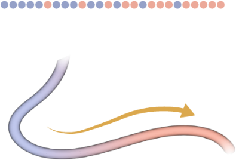
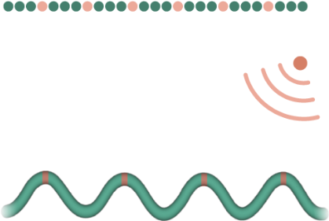
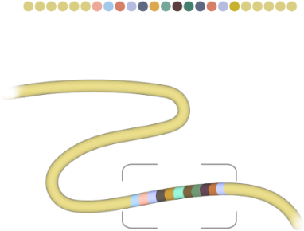

Open science · Area 3
Bio-inspired manufacturing
Spiders and mussels keep fiber proteins unreacted until the right time and place. We're building the same strategy as microfluidics: encapsulated spinning dopes.
How nature does it
In the spider’s duct, a drop in pH triggers the fiber
Scroll the figure sideways →
What we're building
Store, sort, spin

EncapsulateStainless-steel microfluidic chips wrap each spinning dope in a droplet. Steel handles the harsh solvents proteins often need.
SortProgram the order and timing of the droplets, so each protein arrives in the right place.
SpinControl the trigger and cross-linking that turn the dope into a fiber.
Why it matters
The order of the droplets becomes a pattern in the fiber
Scroll the figure sideways →

Gradienttendon repair · robotic tendons · composite layups
Periodicstructural color · metamaterials · biomineralized Localizedstimuli-responsive · designed self-assembly · reservoir computing
Localizedstimuli-responsive · designed self-assembly · reservoir computing
Encodedidentification · addressableOpen
Use it, reproduce it, build on it
Microfluidic CAD library ↗Parametric Onshape parts, MIT license. Includes a spider-duct-style wet-spinning chip.
Humanity Makes Noodles. Nature Makes Machines. ↗The full story, in Assembly Required
Zenodo ↗Papers, methods and data as we release them
Illustrations © Gretchen Hooker / Pixel Naturalist.
Work on encapsulated dopes with us
We're looking for collaborators on protein dopes, microfluidics and spinning.
Get in touch